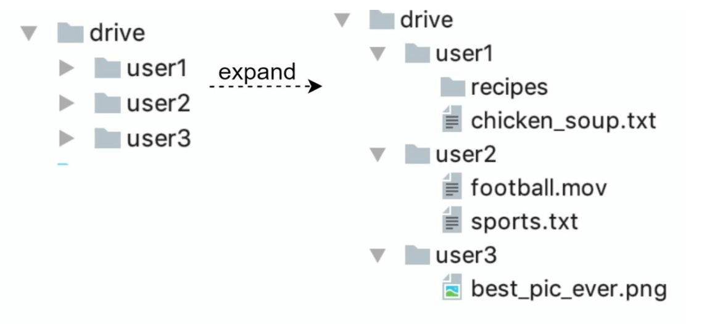
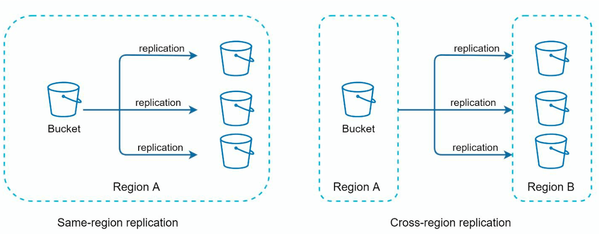
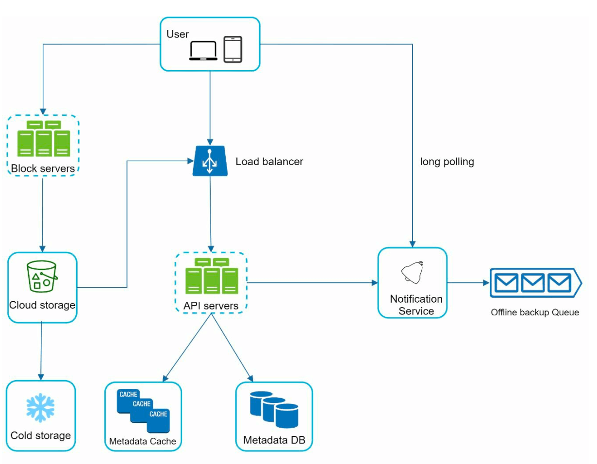
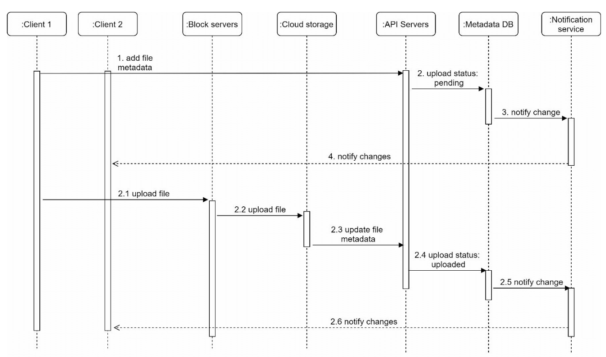
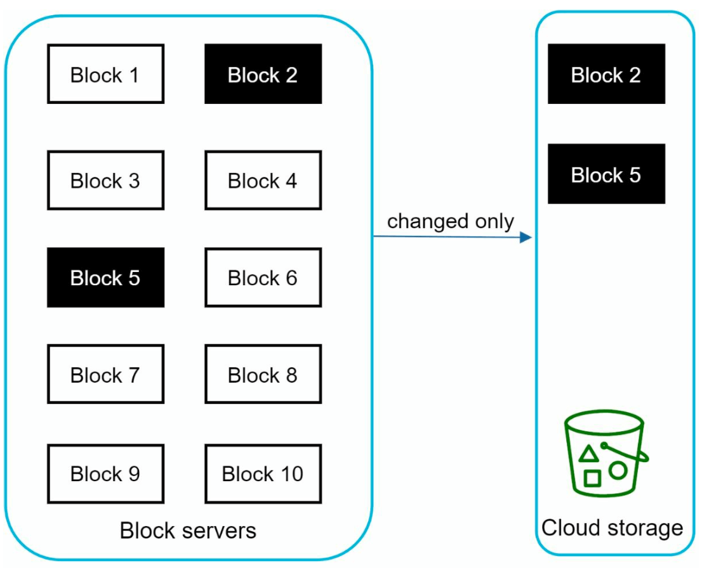
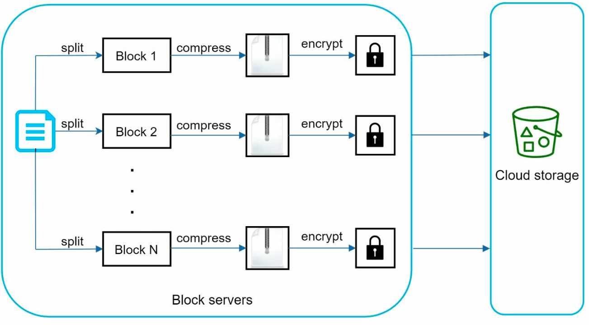
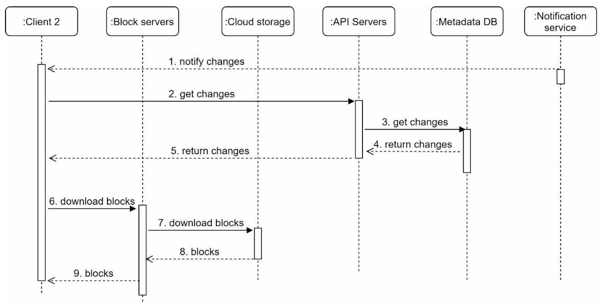

第 15 章：设计 Google Drive
原章节：Design Google Drive · 原项目路径
15. Google Drive/
本章导读
云盘看起来是个"存文件"的系统，好像没什么难的。但只要你用过它，就会遇到这些问题：
- 我在手机上改了一句话，为什么电脑上要等几秒才同步过来？它怎么知道文件变了？
- 同一个文件，我在两台设备上同时改了，会怎么样？会不会丢数据？
- 我改了一个 100 MB 文档里的一个错别字，为什么它不用重新上传 100 MB？
- 免费额度是 10 GB，可服务商有上千万用户，它真的准备了那么多硬盘吗？
这一章真正的难点不是"存文件"，而是"同步"和"冲突"。 存储本身早就被对象存储解决了；难的是让多台互不通信、时钟不同步、还经常离线的设备，最终对同一份数据达成一致，并且一个字节都不能丢。
学完这一章，你应该能回答：两台设备同时改了同一个文件，系统该怎么判？怎么只传变化的那一小块数据？服务器怎么把"文件变了"这件事告诉一百万个在线客户端？
你将学到
- 云盘系统的完整组件：块服务器、对象存储、元数据库、通知服务、离线队列
- 块级同步（Block-level Sync） 的原理——为什么只传变化的数据块，以及内容定义分块（CDC） 如何解决"插入一个字节导致全文件重传"的问题
- rsync 滚动校验和 算法为什么能在 O(1) 时间内滑动窗口
- 增量同步（Delta Sync） 的完整交互流程
- 文件同步的冲突解决：保留双副本、最后写入者胜出、版本向量 三种策略的取舍
- 通知服务的四种推送机制：长轮询、WebSocket、SSE、移动推送，以及各自的成本
- 存储成本优化：去重、压缩、冷热分层，以及它们各自踩的坑
- 元数据库的表结构设计，以及"块表"如何支撑去重和版本回溯
1. 需求与范围
功能需求
- 上传和下载文件
- 多设备之间同步文件
- 保留文件修订历史（Revision History）
- 支持带权限的文件分享
- 文件被编辑、删除、分享时发送通知
非功能需求
| 需求 | 含义 |
|---|---|
| 可靠性 | 数据丢失是不可接受的——这是整章最重要的一条约束 |
| 快速同步 | 同步延迟过高会让用户以为文件丢了 |
| 带宽效率 | 尽量少传数据（用户可能在移动网络下） |
| 可扩展性 | 支撑 1000 万日活用户 |
| 高可用 | 服务器故障或网络问题时仍能工作 |
「数据丢失不可接受」这条约束会一路决定后面的设计。 它直接排除了"用时间戳做最后写入者胜出"这种简单但有损的冲突解决策略；它也让"主库故障后直接提升一个可能没同步完的副本"变成不可接受的操作。记住这条约束，后面很多设计取舍就都有了理由。
约束与假设
| 项目 | 取值 |
|---|---|
| 每个用户免费空间 | 10 GB |
| 单文件上限 | 10 GB |
| 平均上传文件大小 | 500 KB |
| 上传频率 | 每用户每天 2 个文件 |
| 总存储需求 | 500 PB |
勘误提示：这里的「500 PB」按字面算不出来。
1000 万用户 × 10 GB = 100 PB，只有 500 PB 的五分之一。详见文末【勘误与补充】。
2. 粗略估算：配额不等于实际占用
先算容量
配额总量 = 1000 万用户 × 10 GB = 100,000,000 GB = 100 PB
再算真实流量
每日新增文件数 = 1000 万 × 2 = 2000 万个
每日新增数据量 = 2000 万 × 500 KB = 10,000,000,000 KB ≈ 10 TB/天
一年累计 ≈ 10 TB × 365 ≈ 3.65 PB
这两个数字放在一起，暴露了一个重要的认知：
用户配额（100 PB）和实际占用（每年 3.65 PB）差了将近 30 倍。
绝大多数用户根本用不满 10 GB。所以服务商不会真的准备 100 PB 硬盘——它们做的是配额超卖（Oversubscription）：承诺的容量远大于实际物理容量，靠"大多数人用不满"这个统计规律来运营。
这是所有存储型业务的商业模型基础，也是为什么"免费 10 GB"这种承诺在经济上成立。
但设计系统时，你仍然要按最坏情况估算：如果某个用户真的传了 10 GB 的大文件（比如一个视频工程），你的单文件上传通道必须能扛住。这就是为什么需要块级上传和断点续传，而不是简单的 HTTP POST。
500 PB 是怎么来的？
如果一定要凑到 500 PB，需要额外的放大假设：
100 PB（用户数据）
× 约 2 倍（保留多版本历史）
× 约 2.5 倍（多副本或纠删码冗余）
≈ 500 PB
这个推导是自洽的，但原笔记完全没有给出，读者无法复现。详见文末【勘误与补充】。
3. 单机起步：命名空间（Namespace）

最简单的方案：
- Web 服务器：处理上传和下载
- 元数据库：记录用户信息、登录信息、文件信息
- 存储目录：按命名空间组织的文件目录
目录结构是这样的：
drive/ ← 根目录
├── namespace_user_A/ ← 用户 A 的命名空间
│ ├── report.docx
│ └── photos/
│ └── trip.jpg
├── namespace_user_B/
│ └── notes.md
└── ...
关键设计：每个文件或文件夹由「命名空间 + 相对路径」唯一确定。
namespace_user_A + "photos/trip.jpg" → 唯一确定一个文件
为什么这个模型不够用
这个方案有三个致命问题：
① 无法扩展。 所有文件在一台机器的文件系统里，容量和 IOPS 都有上限。
② 没有冗余。 磁盘坏了，数据就没了——而我们的约束是"数据丢失不可接受"。
③ 命名空间模型撑不住「分享」。 这是最容易被忽略的一点。
补充：为什么"命名空间 + 路径"模型和分享功能天然冲突？
命名空间模型隐含一个假设：一个文件只属于一个用户。但分享会打破它——用户 A 把一个文件夹分享给 B 之后，这个文件夹同时属于两个人的"视图"。
更麻烦的是同一份物理数据会出现在两个命名空间里，如果你按命名空间存副本，那就产生了冗余和不一致；如果不存副本而只存引用，那"路径"就不再是唯一标识了。
真实云盘的解法是：抛弃路径作为唯一标识，改用「文件 ID + 父子关系」。 文件有自己的 ID，路径只是"从根节点走下来的一个视图"。这样一个文件可以被多个父节点引用，分享就变成了"在别人的目录树里加一个引用"。这是从"文件系统模型"转向"图模型"的关键一步。
API 设计
① 上传文件，支持两种模式：
- 简单上传（Simple Upload）：文件小的时候用，一次 HTTP 请求搞定。
- 可续传上传（Resumable Upload）：
- 端点：
https://api.example.com/files/upload?uploadType=resumable - 先发一个初始请求，拿到一个可续传的 URL；
- 然后上传数据并监控上传状态；
- 如果中断，从断点继续。
- 端点：
② 下载文件
- 端点：
https://api.example.com/files/download
③ 获取文件修订历史
- 端点：
https://api.example.com/files/list_revisions
为什么必须支持可续传上传？ 因为单文件上限是 10 GB，而 10 GB 在移动网络下几乎不可能一次传完。可续传不是优化，是功能必需。
4. 走向分布式
原笔记给出了四项改进，都正确：
① 分片（Sharding）：按 user_id 把存储分散到多台服务器上。
为什么选
user_id作为分片键？ 因为云盘的访问模式是"用户只看自己的文件"——按user_id分片后，一个用户的所有文件都在同一片上，避免了跨分片查询。如果按文件 ID 随机分片，那么"列出我的所有文件"就要查遍所有分片。
② 对象存储（Amazon S3）：用 S3 做可扩展、有冗余的文件存储，并开启跨区域复制（Cross-Region Replication）。

③ 负载均衡器：把流量分发到多台 Web 服务器。
④ 元数据库复制：通过数据库分片和复制保证可用性。
这里的分工要讲清楚：
- 文件内容（字节） 存对象存储。它天然支持近乎无限的容量、多副本冗余、按量计费。
- 文件元数据（谁、什么时候、多大、叫什么） 存关系型数据库。它需要事务、需要 JOIN、需要一致性。
把这两者分开，是云盘架构的第一个关键决策。 混在一起（比如把元数据也存成 S3 里的 JSON）会让你在"查我最近修改的 10 个文件"这种查询上付出巨大代价。
同步冲突：一个例子

原笔记给的例子：
- 用户 1 和用户 2 同时尝试更新同一个文件，但用户 1 的操作先被系统处理。
- 用户 1 的更新成功了，用户 2 收到一个同步冲突（Sync Conflict）。
- 系统把同一份文件的两个副本都呈现出来：用户 2 的本地副本，和服务端的最新版本。
- 用户 2 可以选择合并两个文件，或者用一个覆盖另一个。
这个例子本身是对的，但它只讲了"发现冲突之后怎么办"，没有讲"系统怎么知道这里发生了冲突"。 后者才是真正的难点，见第 6 节。
5. 改进后的高层设计

九个组件，逐个说明：
① 用户交互（User Interaction） 用户通过浏览器或移动 App 访问。
② 块服务器（Block Servers）
- 文件被切成最大 4 MB 的块（Block），每块分配一个唯一的哈希值；
- 各块独立地存放在云存储（如 Amazon S3）中；
- 重建文件时，按特定顺序把这些块拼起来。
这是整章最重要的一个设计。 一旦文件被拆成"按内容哈希寻址的块"，三件事同时变得可能：去重（相同哈希的块只存一份）、增量同步（只传变化的块）、断点续传（块是天然的重传单位）。第 10 节会详细展开。
③ 云存储（Cloud Storage） 块存放在云存储中，获得可扩展性和冗余。
④ 冷存储（Cold Storage） 不活跃的文件迁移到冷存储以降低成本。
⑤ 负载均衡器（Load Balancer） 把请求均匀分发给 API 服务器。
⑥ API 服务器（API Servers）
- 处理用户认证、资料管理、文件元数据更新；
- 管理所有非上传类的工作流。
⑦ 元数据库与缓存（Metadata Database and Cache）
- 存储用户、文件、块、版本的元数据；
- 频繁访问的元数据缓存起来以加快读取。
⑧ 通知服务（Notification Service）
- 一个发布/订阅（Publisher/Subscriber）系统，把文件变化（新增、编辑、删除）通知给客户端；
- 保证客户端能拉取到最新的更新。
⑨ 离线备份队列（Offline Backup Queue） 临时保存文件变更信息，供离线客户端在恢复在线后同步。
注意 ⑧ 和 ⑨ 的分工：⑧ 负责在线推送，⑨ 负责离线暂存。这个"在线推送 + 离线队列"的组合，是所有移动端同步系统的标准模式——因为你永远不知道客户端此刻在不在线。
6. 核心难点：同步冲突的判定与解决
这是本章最需要讲透的部分。原笔记只给了一个"冲突发生了"的例子，但没讲清楚系统凭什么判定这里存在冲突。
先分清两类"冲突"
很多人把这两件事混为一谈：
| 类型 | 场景 | 是否需要"解决冲突" |
|---|---|---|
| 假冲突（顺序更新） | 设备 A 改了文件，同步完成；之后设备 B 才改 | 不需要。B 的版本本来就基于 A 的版本，直接采用 B 的即可 |
| 真冲突（并发更新） | 设备 A 和 B 在互不知情的情况下同时改了同一个文件 | 需要。两个版本都基于同一个旧版本，谁也不是谁的后续 |
关键问题是：如何区分这两者？
策略一：最后写入者胜出（Last-Write-Wins, LWW）
最简单的策略：谁的时间戳晚，谁赢。
优点：实现极简单，不需要额外的元数据。
缺点（很致命）：
- 会丢数据。 输的那一方的修改被直接丢弃。而我们的约束是"数据丢失不可接受"——LWW 直接违反了这个约束。
- 时间戳不可信。 设备的系统时钟可能不准（用户手动改过、时区错误、电池耗尽后重置）。一台时钟慢了 5 分钟的设备，它的修改永远赢不了。
- 无法区分并发与顺序。 设备 A 在 10:00:00 修改，设备 B 在 10:00:01 修改，但 B 根本没看到 A 的修改——LWW 会认为 B 赢了，于是 A 的修改被静默丢弃。
结论：对云盘这种"数据丢失不可接受"的系统，LWW 是不可接受的。 它只适合那些"丢掉旧值无所谓"的场景，比如用户在线状态、最后活跃时间这类可重算的数据。
策略二：保留双副本（Keep Both Copies）
这是 Google Drive 和 Dropbox 实际采用的做法。 检测到冲突时：
- 服务端保留自己的版本；
- 把客户端的版本另存为一个新文件，文件名带上冲突标记，例如
report (conflicted copy 2026-09-20).docx； - 通知用户"这里有个冲突，你来处理"。
优点：
- 零数据丢失，符合"数据丢失不可接受"的约束；
- 不需要用户实时在线就能保证安全。
缺点：
- 用户要手动清理，长期使用会积累一堆
conflicted copy文件； - 冲突频繁时体验很差。
注意原笔记的表述：原笔记在 File Sync 一节写的是「First processed version wins」（先被处理的版本胜出）。这个说法和它自己在 Sync Conflicts 一节写的"两个副本都保留"是一致的——因为"胜出"指的是哪个版本继续用原文件名，而不是"哪个版本被丢弃"。但**"wins"这个词极具误导性**，读者很容易理解成"输的那个被删掉了"，从而和"数据丢失不可接受"产生矛盾。详见文末【勘误与补充】。
策略三：版本向量（Version Vector）
这是唯一能在原理上正确区分"顺序更新"和"并发更新"的方法。 现代同步系统（包括分布式数据库）普遍使用它。
核心思想：每个设备维护一个计数器向量，记录"我知道每个设备写到了第几版"。
假设有两个设备 A 和 B。文件的当前版本向量是 {A: 3, B: 5}，意思是"A 写到了第 3 版，B 写到了第 5 版，且双方都已知晓"。
设备要写入时，把自己那一项加一。比较两个版本时：
若 V1 的每一项都 ≥ V2 的对应项，且 V1 ≠ V2
→ V1 支配（dominates）V2，说明 V2 是 V1 的祖先，属顺序更新，无冲突，V1 胜出
若 V1 和 V2 互不支配
→ 真并发冲突，必须保留双副本交给用户处理
举例说明：
| 场景 | A 的版本 | B 的版本 | 判定 | 处理 |
|---|---|---|---|---|
| B 在 A 同步完成后才改 | {A:2, B:1} |
{A:2, B:2} |
A 支配 B | 顺序更新，采用 B |
| A 和 B 离线各改各的 | {A:2, B:1} |
{A:1, B:2} |
互不支配 | 真冲突，保留双副本 |
| 三方都改过 | {A:2, B:2, C:1} |
{A:1, B:2, C:2} |
互不支配 | 真冲突 |
版本向量为什么能解决问题？ 因为它记录的是因果关系，而不是墙上时钟。设备不需要知道"现在几点"，只需要知道"我基于哪个版本改的"。因果关系不受时钟漂移影响，这是它相对 LWW 的根本优势。
版本向量的代价：
- 向量长度随设备数增长。一个用户有 5 台设备，向量就有 5 项；有 50 台设备就很占空间。实际实现中常用版本向量 + 修剪，或者用 Dotted Version Vector 等变体来控制体积。
- 需要在文件级（而不是块级）维护——块级维护版本向量的开销太大，没有必要。
那实时协同编辑呢？
如果你要设计的是Google Docs（多人同时在一个文档里打字），上面这套都不够用，因为冲突粒度是"字符"而不是"文件"。那类系统用的是：
- OT（Operational Transformation，操作变换）：把编辑操作做变换后重新应用；
- CRDT（Conflict-free Replicated Data Type，无冲突复制数据类型）：设计出天然可交换、可合并的数据结构。
但对云盘来说不需要。 云盘的同步粒度是"整个文件"，用户不会期望两个人在同一个
.docx上逐字协同。选对粒度，是避免过度设计的关键。
7. 元数据库设计

原笔记给出四张核心表：
| 表 | 作用 |
|---|---|
| 用户表（User） | 用户资料和偏好设置 |
| 文件表（File） | 文件元数据：大小、名称、路径 |
| 块表（Block） | 记录文件的各个块，用于重建文件 |
| 文件版本表（File Version） | 保存文件修订历史 |
这四张表的相互关系，是理解整个系统数据模型的关键：
User ──1:N──▶ File ──1:N──▶ File Version ──N:M──▶ Block
│ │ │
"谁拥有" "第几版" "按内容哈希寻址的物理块"
几个关键设计点：
① File 和 File Version 必须分开。
File 存的是"这个概念"（名称、路径、所有者），File Version 存的是"某个时刻的内容"（大小、块的列表、时间戳）。分开之后，"查看历史版本"和"回滚到某一版"就变成了简单查询，而不是"去备份系统里捞文件"。
② File Version 与 Block 是多对多关系。
一个版本包含多个块，而同一个块可以被多个版本引用——这正是去重的实现方式。你只改了一个 4 MB 的块，新旧两个版本共享其余所有块，存储只增加了一个块。
③ Block 表按内容哈希索引。
块表的主键应该是块的哈希值，而不是自增 ID。这样"这个块我是不是已经存过了"就变成一次主键查询，O(1)。
④ 块是引用计数的（Reference Counting）。 多个版本可能引用同一个块。删除文件时，不能直接删块，必须先检查引用计数——只有当没有任何版本引用这个块时，才能真正删除。这是垃圾回收（GC）逻辑的核心，也是很多自研云盘系统出现"误删数据"bug 的地方。
8. 文件上传流程

原笔记给的流程：
- 文件上传：文件被块服务器切块、压缩、加密；块上传到块服务器，再存进 S3。
- 元数据上传：客户端把元数据发给 API 服务器；元数据以
pending状态存入数据库。 - 完成：S3 触发回调，把文件状态更新为
uploaded；通知服务通知相关用户。
这个流程里有三个值得展开的工程细节：
细节一：压缩和加密的顺序不能颠倒
必须是 先压缩，再加密。
为什么？ 因为加密会把数据变成高熵的伪随机字节流，几乎无法再被压缩。如果先加密再压缩，压缩算法看到的是一堆随机数据，压缩率接近 1:1，白费 CPU。
这个顺序问题在工程上很容易搞错，而且错了之后不会有报错——系统照常运行，只是存储和带宽成本悄悄翻倍。
细节二：pending 状态是必须的
元数据在视频/文件字节上传完成之前就已经写进数据库了。这是"并行上传"的必然结果（第 14 章讲过同样的模式）。所以必须有状态机：
pending（元数据已到，字节未到）
↓ S3 回调确认所有块到齐
uploaded（可以下载）
↓
deleted（软删除，等待 GC）
如果没有这个状态机，用户在字节还没传完时去下载，会拿到一个不完整的文件——而且下载不会报错，只会得到一个损坏的文件。这类 bug 极其难排查。
细节三：为什么用回调（Callback）而不是轮询
S3 上传完成后主动回调 API 服务器，比客户端或服务端轮询"传完了吗"要高效得多。轮询会浪费大量无意义的请求，而回调只在真正完成时触发一次。
代价：回调可能丢失或重复。所以回调处理必须幂等，并且要有一个兜底的对账任务（比如每 10 分钟扫描一次超过 30 分钟仍处于
pending的记录，去 S3 核对块是否齐全）。
9. 块级同步：云盘省带宽的核心
这是原笔记讲得最浅、但工程价值最高的一块。原笔记只写了一句「Delta Sync: Transfer only modified blocks instead of the entire file」。但"只传变化的块"这句话里藏着整个云盘系统最精妙的一个算法问题。
问题：什么是"变化的块"？
假设你有一个 100 MB 的文件，被切成 25 个 4 MB 的固定大小块：
块1 块2 块3 ... 块25 （每个 4 MB）
现在你在文件的最开头插入了一个字节。
用固定大小切块会发生什么？
原始： [ABCD][EFGH][IJKL][MNOP]...
插入后：[XABC][DEFG][HIJK][LMNO][P...]
每一个块的边界都向右移了一位，所以每一个块的内容都变了。 25 个块的哈希全部不同 → 系统认为整个文件都变了，要重新上传 100 MB。
这就是固定大小分块的致命缺陷：一次头部插入，导致全文件重传。 而这恰恰是最常见的编辑模式——在文档开头加一段话、在代码文件顶部加一个 import、在表格最前面插入一行。
解法一：rsync 的滚动校验和
rsync 解决这个问题的方法非常巧妙：它不假设块的边界是固定的，而是在旧文件里"滑动"地寻找匹配。
流程（简化版）：
-
**接收方（服务端）**把旧文件按固定大小切块，对每块计算两个校验和：
- 弱校验和（Weak Checksum）：Adler-32 变体，用于快速筛选；
- 强校验和（Strong Checksum）：MD5（现代实现多用 xxHash、BLAKE3），用于最终确认。 把这些校验和发给发送方（客户端）。
-
发送方（客户端）拿着旧文件的校验和列表，在自己的新文件上逐字节滑动一个窗口：
- 对当前窗口算弱校验和；
- 在旧块的弱校验和哈希表里查；
- 没命中 → 窗口向右滑一个字节，继续；
- 命中 → 再用强校验和确认。确认通过，说明"这段内容和旧文件的某一块完全相同"，于是标记为"复用"，窗口直接跳过这一整块。
-
最终，发送方只把"没有匹配上的那些片段"发给接收方，并附带一份"如何把复用片段和新片段拼起来"的指令列表。
关键点：弱校验和是「可滚动的（Rolling）」
rsync 的弱校验和定义为：
a(k, l) = (Σ Xi) mod M （窗口内所有字节的和）
b(k, l) = (Σ (l - i + 1) · Xi) mod M （字节的加权和）
s = a + 2^16 · b
它的妙处在于：当窗口向右滑动一个字节时，a 和 b 都可以在 O(1) 时间内更新，而不需要重新遍历整个窗口。
滑出字节 X_out，滑入字节 X_in：
a' = a - X_out + X_in
b' = b - (l - k + 1) · X_out + a'
这就是"滚动"的含义。 如果没有这个性质，每次滑动都要重新计算整个窗口的校验和，算法复杂度会从 O(n) 退化到 O(n × 窗口大小)，完全不可用。
这是计算机科学里一个非常漂亮的技巧，值得记住它的思想：设计一个"增量可更新"的摘要函数，让滑动窗口的代价从 O(w) 降到 O(1)。
解法二：内容定义分块（CDC）
rsync 是"客户端和服务端协商"，适合点对点的场景。在云盘这种"客户端上传到对象存储"的架构里，更常用的方案是内容定义分块（Content-Defined Chunking, CDC）。
核心思想：让块的边界由「内容」决定，而不是由「位置」决定。
具体做法：用一个滚动哈希（Rabin 指纹，或 FastCDC 里用的 Gear hash）扫过整个文件。当哈希值满足某个条件时（比如 hash mod 2^22 == 0），就在这里切一刀。
因为切分条件只依赖"当前位置往前的一段字节内容"，所以：
原始： ...数据A[边界]数据B...
插入后：...数据A[X]数据B...
在插入点之前，所有边界位置完全不变；插入点之后，边界也会在很短的范围内重新对齐到原来的位置。 结果就是：只有插入点附近的一两个块变了，其余块的哈希完全不变。

对比一下那个 100 MB 文件的例子：
| 方案 | 头部插入 1 字节后需要上传的数据量 |
|---|---|
| 固定 4 MB 分块 | 100 MB（全部重传） |
| 内容定义分块（平均 4 MB） | 约 4～8 MB（只有插入点附近变了） |
节省超过 90%。
CDC 的代价：
- 块大小不固定，所以元数据里必须记录每个块的边界（或长度），索引结构更复杂。
- 需要调参：要设置最小块大小（避免产生大量碎片）、平均块大小、最大块大小。参数没调好会导致块数量爆炸或去重效果差。
- 滚动哈希的计算有 CPU 开销，不过 FastCDC 这类优化实现已经把它压得很低了。
工业界的现实：Google Drive、Dropbox、restic、BorgBackup 等系统都用的是 CDC 思路。你不需要自己实现它，但必须知道"为什么固定分块不行"，这是面试里的高频考点。
Delta Sync 的完整交互

把上面的原理串成一个完整的交互流程：
- 客户端切块：本地按 CDC 把文件切成块，计算每块的哈希。
- 客户端上报块清单：只发哈希列表（每块约 32 字节），不发数据。
- 一个 100 MB 的文件分成 25 块，清单只有约 800 字节。
- 服务端比对：对每个哈希查块表，返回"哪些块我还没有"。
- 客户端只上传缺失的块。
- 服务端组装：把新块和已有的块按顺序拼成新版本，写入
File Version表。
注意第 3 步的价值：它同时实现了去重。如果另一个用户（或者你自己的另一个文件）已经上传过内容相同的块，服务端直接说"我有了"，一个字节都不用传。增量同步和去重，本质上是同一个机制的两个侧面。
10. 文件同步：压缩与冲突处理
原笔记在 File Sync 一节给了三点：
- 增量同步（Delta Sync）：只传变化的块，不传整个文件（详见第 9 节）。
- 压缩（Compression）：按文件类型选择合适的压缩算法。
- 冲突解决（Conflict Resolution）：
- 先被处理的版本胜出；
- 冲突的版本单独保存，交给用户解决。
关于压缩，补充一点：压缩算法的选择要看数据类型。
| 数据类型 | 建议 | 原因 |
|---|---|---|
| 文本、代码、日志 | 通用压缩（zstd、gzip） | 压缩比高，通常能到 3:1 以上 |
| 图片（JPEG/PNG）、视频、音频 | 不要压缩 | 这些格式本身已经是压缩格式，再压几乎没收益，纯浪费 CPU |
| 数据库文件、虚拟机镜像 | 通用压缩 | 通常有大量重复模式 |
"对已压缩数据再压缩"是一个常见的性能陷阱：CPU 100% 跑满，存储只省了 1%。生产系统一般用文件扩展名 + 魔数（Magic Number） 做白名单，只对已知可压缩的类型启用压缩。
关于冲突解决，详见第 6 节——那里给出了三种策略的完整对比。这里只强调一句：
原笔记写的「First processed version wins」在结果上是正确的（它指的是"哪个版本保留原文件名"），但用词有严重误导性。详见文末【勘误与补充】。
11. 文件下载流程

下载流程由"别处新增或修改了文件"触发。客户端有两种途径知道这件事：
- 客户端 A 在线时：如果文件被别的客户端改了，通知服务会主动告诉 A。
- 客户端 A 离线时：变更信息被存入缓存（离线备份队列）；等 A 重新上线，它主动拉取最新的变更。
一旦客户端知道文件变了，它会：
- 触发（Trigger）：通知服务告知客户端有文件更新。
- 拉取元数据（Metadata Fetch）：客户端通过 API 服务器获取更新后的元数据——注意是拉取，不是推送。
- 下载块（Block Download）：客户端从块服务器下载变化的块，重建文件。
第 2 步和第 3 步的顺序至关重要：先元数据，后数据。
因为元数据里才有"这个新版本由哪些块组成、每块的哈希是什么"这份清单。客户端拿着清单才能算出"我本地已经有哪些块、还缺哪些块"——于是下载也变成了增量的。
这就是为什么"通知"只需要是一个信号，而不需要携带数据。 第 12 节会展开这一点。
12. 通知服务：怎么知道别的设备改了文件
原笔记只写了三行：「目的是让客户端了解文件变化；机制是实现长轮询（Long Polling） 做异步通知；当文件被新增、编辑或删除时，通知被推送给所有相关客户端。」
长轮询只是四种机制之一，而且不一定是最优选择。 这里把四种都讲清楚。
四种推送机制对比
| 机制 | 原理 | 优点 | 缺点 | 适用场景 |
|---|---|---|---|---|
| 长轮询（Long Polling） | 客户端发一个请求，服务端不立即返回，而是挂起（如 30～60 秒）；有事件就立即返回，超时就返回空，客户端马上再发一个 | 实现简单；兼容所有代理和防火墙；不需要协议升级 | 每个客户端占用一个连接；服务端连接数压力大；事件到达有"返回 + 重新发起"的空窗期 | 兼容性优先的场景，原笔记的选择 |
| WebSocket | 通过 HTTP Upgrade 建立全双工长连接 | 真正的双向实时；服务端可随时推送；无空窗期 | 需要负载均衡器支持协议升级；连接状态管理复杂；断线重连要处理 | 桌面客户端、Web 端 |
| SSE（Server-Sent Events） | 基于 HTTP 的单向服务端推送流 | 比 WebSocket 简单；自动重连；走标准 HTTP | 只能服务端→客户端单向；HTTP/1.1 下每个连接占用一个 TCP 连接 | 只需服务端推送的场景 |
| 移动推送（APNs / FCM） | 通过 Apple / Google 的推送通道唤醒 App | App 被杀死或后台时也能收到；省电 | 不保证送达、不保证时效；载荷有大小限制；依赖第三方 | 移动端必须用 |
推荐架构：混合方案
没有任何一种机制能覆盖所有场景，实际系统都是组合使用：
桌面客户端 ──▶ WebSocket（长连接，实时）
Web 客户端 ──▶ SSE 或 WebSocket
移动 App ──▶ APNs / FCM 推送（唤醒）──▶ 再走 API 拉取变更
最关键的设计原则：通知只是「提示」，不是「数据」
通知服务绝不能承担"传输变更内容"的职责，它只负责告诉客户端"有东西变了，去拉一下"。
为什么？ 因为通知是不可靠的：
- 长轮询会超时；
- WebSocket 会断线；
- 移动推送会丢失、会被系统延迟批量下发；
- 服务端在推送过程中崩溃，事件就没了。
如果通知里带着数据，丢了就等于丢数据。 但如果通知只是"嘿，去看看"的提示，那么：
- 通知丢了 → 客户端下一次轮询/重连时会发现；
- 通知重复了 → 客户端拉取是幂等的，重复拉取没有副作用；
- 通知乱序了 → 客户端以服务端返回的版本号为准，不依赖通知顺序。
这个模式叫「提示式通知（Hint-based Notification）」，是所有可靠同步系统的基石。 面试时主动讲出这一点，是很强的加分项。
容量估算：长轮询到底贵不贵
假设 1000 万 DAU，高峰期 10% 在线，即 100 万个并发连接。
| 资源 | 估算 |
|---|---|
| 文件描述符 | 每个连接 1 个 fd。Linux 默认 ulimit -n 是 1024，必须调大到 10 万以上，或用 epoll 多路复用 |
| 内存 | 每个挂起的连接约占几十 KB 到上百 KB（请求上下文、缓冲区）。100 万 × 50 KB ≈ 50 GB |
| 服务器数量 | 按每台 10 万连接算，需要 约 10 台 专门的推送服务器 |
这就引出了两个设计要点：
- 通知服务必须按
user_id分片。 一个用户的多个设备要连到同一台通知服务器（用一致性哈希路由），否则服务端要跨机器广播，成本极高。 - 必须有重连风暴的防护。 一次部署或一次故障，100 万客户端会同时重连，瞬间把服务器打爆。防护手段是客户端重连加随机抖动（Jitter），把重连时间摊开。这个手法和"缓存过期时间加抖动"是同一个思想。
13. 存储成本优化
原笔记给了三条，都正确。这里补充每条背后的坑。
① 去重（De-duplication）
原笔记写的是「在账户级别用基于哈希的比对移除重复的块」。
这里有个重要的取舍需要补充：
| 去重范围 | 节省效果 | 问题 |
|---|---|---|
| 账户级（同一用户内部） | 一般 | 单个用户很少存大量重复文件，收益有限 |
| 全局（跨所有用户） | 高 | 有隐私侧信道风险 |
全局去重的隐私问题是什么？
如果系统跨用户去重，那么"这个块是否存在"就泄露了信息。攻击者可以：
- 拿到一份疑似存在的文件（比如某公司的内部文档）；
- 计算它的哈希；
- 尝试上传；
- 如果系统回答"这个块我已经有了，不用传"，就证明了别人也拥有这份文件。
这就是著名的 "learn-the-hash" 攻击。Dropbox 早期因为做全局去重而受到过这类质疑。
还有一个更根本的矛盾：加密会破坏去重。
- 如果每个用户用自己的密钥加密，那么相同的明文块会产生不同的密文，哈希也就不同 → 去重彻底失效。
- 如果为了让去重生效而用收敛加密（Convergent Encryption）（密钥 = 明文的哈希），那么相同明文产生相同密文 → 去重生效，但又回到了上面那个隐私问题。
结论：去重、加密、隐私，这三者只能取其二。 这是一个真实的、没有完美解的系统设计权衡。面试时能主动指出这个矛盾，比单纯说"用哈希去重"要深得多。
② 版本控制策略
原笔记的两条建议：
- 限制保存的修订数量；
- 对频繁编辑的文件优先保留近期版本。
补充：这就是"保留策略（Retention Policy）"。 常见的分级做法：
最近 30 天：保留每一个版本
30 天 ~ 1 年：每小时保留一个
1 年以上：每天保留一个
超过 5 年：只保留每月一个
为什么可以这样砍？ 因为"回滚到某个版本"的需求，越久远的版本被回滚的概率越低，而且久远版本的精确度要求也越低（没人会想回滚到"三个月前某天的 14:32"这一版）。这是用"精度"换"成本"的经典思路。
③ 冷存储（Cold Storage）
把很少访问的文件迁到更便宜的存储，例如 Amazon S3 Glacier。
必须补充的坑：冷存储的取回是有延迟的。
| 存储层级 | 取回延迟 | 相对成本 |
|---|---|---|
| 标准存储 | 毫秒级 | 基准 |
| 低频访问（IA） | 毫秒级 | 较低 |
| Glacier 即时取回（Instant Retrieval） | 毫秒级 | 中等 |
| Glacier 弹性取回（Flexible Retrieval） | 分钟到小时级 | 低 |
| Glacier 深度归档（Deep Archive） | 小时级 | 最低 |
这意味着你不能随便把文件扔进最便宜的层级。 如果用户第二天突然要打开一个被归档到 Deep Archive 的文件，他要等几个小时——这在产品上完全不可接受。
正确做法：基于访问时间（Last Access Time） 制定生命周期策略，并且分级下沉：
90 天未访问 → 低频访问层
1 年未访问 → Glacier 即时取回层
3 年未访问 → Glacier 深度归档
注意"记录访问时间"本身也有成本：每次读取都写一次访问时间，会产生大量写操作。所以实际系统常用抽样记录或按批次统计，而不是精确记录每一次访问。
补充：纠删码（Erasure Coding）与三副本
原笔记没提这一点，但它对存储成本影响巨大。
- 三副本（3× Replication）：每份数据存 3 个完整副本，存储开销 3 倍。读取快、恢复快。
- 纠删码（Erasure Coding）：把数据切成 k 份，再计算出 m 份校验数据，共 k+m 份。比如 10+4 配置，存储开销只有 1.4 倍，能容忍任意 4 份丢失。
| 方案 | 存储开销 | 恢复代价 |
|---|---|---|
| 3 副本 | 3.0× | 低（直接复制） |
| 10+4 纠删码 | 1.4× | 高（要读 10 份并重算） |
| 6+3 纠删码 | 1.5× | 中 |
所以现代对象存储（包括 S3）普遍采用纠删码而不是三副本，能省下一半以上的存储成本。代价是恢复时需要读取多个节点并做计算，恢复时间更长。对冷数据（几乎不读）来说，这个代价完全可以接受。
14. 故障处理
原笔记给了五条，逐条分析并补充：
① 负载均衡器故障 备用负载均衡器接管（主备模式）。
② 块服务器故障 待处理的任务重新分配给其他服务器。
补充：块服务器是无状态的（块数据在对象存储里，不在块服务器本地），所以它可以随时被替换。这正是把块存到对象存储而不是本地磁盘的价值。
③ 元数据库故障 原笔记写的是「Promote a slave node to master（提升一个从节点为主节点）」，并把流量重定向到剩余副本。
这里有术语和逻辑两个问题：
- 术语：
Master/Slave已被业界弃用，应使用 Primary-Replica（主副本）。详见文末【勘误与补充】。- 逻辑：异步复制下，被提升的副本可能还没有同步完最新数据，提升它会丢掉最后那一部分写入——这直接违反了本章"数据丢失不可接受"的约束。
④ 云存储故障 用跨区域复制来获取不可用的文件。
⑤ 通知服务故障 客户端重连到其他服务器。
补充：客户端重连必须加随机抖动。 通知服务挂掉时，100 万客户端会同时尝试重连。如果所有客户端都立刻重连，新服务器会瞬间被打爆，形成重连风暴（Thundering Herd）——结果就是整个服务雪崩。做法是：重连间隔 = 基础间隔 × (1 + 随机数)，并随重试次数指数增长。
勘误与补充
本节逐条指出原笔记中不准确、过时或缺失的地方。
勘误 1：「500 PB 总存储」没有给出推导，按字面算不出来
- 原文说法：约束与假设中列出「Users get 10 GB free space」「10 million DAU」「Total storage required: 500 PB」。
- 问题：按最直接的算法
1000 万 × 10 GB = 100 PB，只有 500 PB 的五分之一。原笔记没有给出任何推导过程，读者无法复现，也无法判断这个数字是否合理。 - 正确说法：要得到 500 PB，需要补齐额外假设——约 2 倍的版本历史开销，再叠加约 2.5 倍的冗余（多副本或纠删码）：
这个推导是自洽的，但必须写出来。100 PB × 2（版本历史）× 2.5（冗余） ≈ 500 PB - 延伸：更值得记住的是另一个事实——用户配额（100 PB）和真实占用（约 3.65 PB/年）差了近 30 倍。云盘业务的商业模型建立在配额超卖之上：承诺的容量远大于物理容量。作为工程师，你既要理解这一点，又不能依赖它——因为总有用户会把 10 GB 用满，你的上传通道必须扛得住。
勘误 2：「First processed version wins」用词有严重误导性
- 原文说法：File Sync 一节写「First processed version wins（先被处理的版本胜出）」，同时又说「Conflicting versions are saved separately for user resolution（冲突版本单独保存，交给用户解决）」。
- 问题：这两句话在逻辑上并不矛盾（"胜出"指的是哪个版本继续用原文件名，而不是哪个版本被丢弃），但**"wins"这个词极具误导性**。读者几乎必然理解成"输的那个版本被删掉了"。而本章的非功能需求白纸黑字写着「数据丢失是不可接受的」——如果"胜出"意味着丢弃另一份，那就直接违反了这条约束。
- 正确说法：应明确表述为「服务端版本保留原文件名，客户端版本被另存为一个带冲突标记的新文件」。这是 Google Drive 和 Dropbox 的实际行为，业界称为保留双副本（Keep Both Copies）。 同时应说明：判定"是否存在冲突"靠的是因果关系，不是时间戳。文件级的时间戳或单调递增版本号无法区分"顺序更新"和"并发更新"——而只有并发更新才需要保留双副本。正确做法是版本向量（Version Vector）。详见第 6 节。
- 延伸：最后写入者胜出（LWW）看似简单，实则违反本章的核心约束：它依赖墙上时钟（设备时钟可能不准），且无法区分并发与顺序，会静默丢弃数据。LWW 只适用于"丢掉旧值无所谓"的数据（如用户在线状态），不适用于任何用户文件。
勘误 3：「Master-Slave」是过时的术语
- 原文说法：故障处理一节写「Promote a slave node to master（提升一个从节点为主节点）」。
- 问题：
Master/Slave（主/奴）因带有奴隶制隐喻，在技术社区已被广泛弃用，主流数据库厂商与开源社区均已改用新词。 - 正确说法：使用 Primary-Replica（主副本） 或 Leader-Follower（主从）。
- MySQL 官方：
SOURCE / REPLICA（旧称MASTER / SLAVE） - PostgreSQL：
Primary / Standby - Redis：
Master / Replica - Kafka：
Leader / Follower
- MySQL 官方：
- 延伸：这不只是用词问题。用对术语，面试官会认为你了解现代实践；用旧术语，可能被追问"你知道这个词已经被淘汰了吗"。
勘误 4：主库故障「提升副本」的做法，与本系统的核心约束冲突
- 原文说法：Metadata Database Failure →
Promote a slave node to master，并把流量重定向到剩余副本。 - 问题：异步复制下，被提升的副本可能还落后于原主库。提升它的瞬间，尚未复制过去的那部分写入就永久丢失了。而本章的第一条非功能需求就是「数据丢失是不可接受的」。原笔记没有指出这个矛盾，也没有给出解法。
- 正确说法：要满足"不丢数据"，必须做到：
- 使用半同步复制（Semi-Synchronous Replication）：至少保证一台副本收到并持久化后才向客户端确认写入；
- 用 GTID / LSN 做精确的位点切换，而不是"挑一台看起来最新的"；
- 用自动故障转移工具（如 MySQL 生态的 Orchestrator、Vitess，PostgreSQL 的 Patroni）把切换时间压到秒级，避免人工误操作；
- 接受代价：半同步会增加写延迟。这是一个明确的 RPO / RTO 权衡——RPO（恢复点目标）是"能容忍丢多少数据"，RTO（恢复时间目标）是"能容忍停多久"。约束是 RPO = 0，那你就必须付这个延迟成本。
- 延伸："非功能需求"不是写在文档里好看的，它会一条条约束你的技术选型。 本章的"数据丢失不可接受"这一条，同时排除了 LWW 冲突策略和异步复制的故障转移方案——能看出这两处关联，就是系统设计能力成熟的标志。
补充 1：块级同步与内容定义分块（CDC）
原笔记只有一句「只传变化的块」，完全没有解释为什么固定大小分块会失效。详见第 9 节。这是全章最重要的补充：固定 4 MB 分块下，在文件开头插入一个字节会导致 100% 重传；内容定义分块能把重传量压到 5% 以下。
补充 2：rsync 滚动校验和算法
原笔记只在延伸阅读里提了 delta sync，正文没有讲原理。详见第 9 节。核心是弱校验和的增量可更新性——它把滑动窗口的代价从 O(w) 降到 O(1)，这是整个算法能成立的前提。
补充 3：通知服务的四种机制与容量估算
原笔记只说了"用长轮询"。详见第 12 节。最重要的结论有两条：
- 没有一种机制能覆盖所有场景，实际系统是 WebSocket / SSE / 长轮询 / 移动推送的混合方案；
- 通知只能作为"提示"，绝不能承载数据——因为通知是不可靠的（会丢、会重、会乱序），而客户端拉取是幂等的。
补充 4：存储成本优化的三个隐藏矛盾
原笔记给了"去重 / 版本控制 / 冷存储"三条，方向都对，但都缺了关键的代价。详见第 13 节：
- 去重 vs 加密 vs 隐私，三者只能取其二（收敛加密 + 全局去重会带来"learn-the-hash"侧信道）；
- 冷存储的取回有分钟到小时的延迟，不能盲目下沉；
- 纠删码比三副本省一半以上存储，代价是恢复更慢，适合冷数据。
补充 5：命名空间模型无法支撑「分享」
原笔记用"命名空间 + 相对路径"作为文件的唯一标识。这在单机阶段没问题，但分享功能会打破"一个文件只属于一个用户"这个隐含假设。详见第 3 节。真实云盘最终都转向了**「文件 ID + 父子引用」的图模型**，路径只是从根节点走下来的一个视图。
补充 6：pending 状态机与块引用计数
原笔记提到元数据以 pending 状态入库，但没有解释为什么必须有状态机，也没有提到块的引用计数。详见第 8 节和第 7 节：
- 没有
pending状态机，用户可能下载到不完整文件，而且下载不会报错； - 没有块引用计数，删除文件时可能误删仍被其他版本引用的块——这是自研云盘最常见的"数据丢失"事故来源。
补充 7：压缩必须在加密之前
原笔记只说了"按文件类型压缩"，没提顺序。详见第 8 节。加密后的数据几乎不可压缩，顺序搞反会让存储和带宽成本悄悄翻倍，而且不会有任何报错。
常见误区
| 误区 | 为什么错 | 正确理解 |
|---|---|---|
| 云盘就是"存文件"，难点在存储 | 对象存储早就解决了存储问题；真正的难点是多设备一致性与冲突判定 | 难点是同步协议、冲突检测、增量传输，不是硬盘 |
| 用最后修改时间就能解决冲突 | 设备时钟可能不准；且时间戳无法区分顺序更新与并发更新 | 用版本向量判断因果关系；无法判定顺序时保留双副本 |
| 冲突时"先处理的胜出"，另一份就丢了 | 这与"数据丢失不可接受"直接冲突 | 服务端版本保留原名，客户端版本另存为带冲突标记的新文件 |
| 文件改了一个字节，就要重新上传整个文件 | 如果按固定大小分块，确实会这样——这正是问题所在 | 用内容定义分块（CDC），让边界由内容决定，只重传插入点附近的块 |
| 固定大小分块和内容定义分块差不多 | 固定分块下，头部插入一个字节会让所有块边界偏移，导致全文件重传 | 编辑模式以"开头插入"为主时，两者差距可达 20 倍以上 |
| 去重总是好事，越多越好 | 全局去重会泄露"某人拥有某文件"的信息；且加密会让去重彻底失效 | 去重、加密、隐私三者只能取其二，需要按业务选 |
| 通知服务可以把变更内容直接推给客户端 | 通知会丢失、重复、乱序；带数据就等于丢数据 | 通知只做"提示"，客户端收到后主动拉取权威数据 |
| 长轮询很便宜，开个连接而已 | 100 万并发连接意味着百万级 fd 和几十 GB 内存 | 必须按 user_id 分片、用 epoll 多路复用、并给重连加随机抖动 |
| 冷存储便宜，把老文件都迁过去 | Glacier 深度归档的取回要小时级，用户无法接受 | 按访问时间分级下沉，并保留"即时取回"这一层 |
| 块服务器挂了数据就丢了 | 块数据在对象存储里，块服务器本身是无状态的 | 块服务器可随时替换，任务重新分配即可 |
| 三副本是唯一的高可靠方案 | 纠删码（如 10+4）只需 1.4 倍存储就能容忍任意 4 份丢失 | 热数据用副本（恢复快），冷数据用纠删码（省钱） |
面试速记
-
一句话概括：Google Drive 是一个以「多设备最终一致」为核心难题的分布式同步系统——它的技术重心不在"存"，而在"怎么用最少的字节，让互不通信、时钟不同步、经常离线的设备，对同一份数据达成一致，且一个字节都不丢"。
-
必答要点：
- 内容与元数据分离：文件字节存对象存储（按内容哈希寻址的块），元数据存关系型数据库（用户表 / 文件表 / 块表 / 版本表）。
- 块级同步 + 内容定义分块：文件切成块，只传变化的块；用 CDC 而不是固定大小分块，避免"插入一个字节导致全文件重传"。
- 冲突判定靠因果关系，不靠时钟：用版本向量区分"顺序更新"和"并发更新"；真冲突时保留双副本，绝不静默丢弃。
- 通知是提示，不是数据：通知服务（长轮询 / WebSocket / 移动推送）只告诉客户端"有变化"，客户端再主动拉元数据 → 再拉缺失的块。因为通知不可靠，而拉取幂等。
- 状态机 + 引用计数：元数据有
pending → uploaded → deleted生命周期；块按引用计数回收，避免误删。
-
加分项：
- 主动指出去重、加密、隐私三者只能取其二（收敛加密会导致 learn-the-hash 攻击）。
- 主动指出本章的"数据丢失不可接受"这条约束同时排除了 LWW 冲突策略和异步复制的故障转移，并给出替代方案（版本向量 / 半同步复制）。
- 主动提到 CDC 让重传量从 100% 降到 5% 以下，并说明"头部插入"是最常见的编辑模式。
- 主动说明压缩必须在加密之前，否则压缩率归零且不会报错。
-
高频追问：
- "两台设备同时改了同一个文件，怎么处理？" → 先判因果：用版本向量比较两个版本，若一方支配另一方则是顺序更新，直接采用新的；若互不支配则是真并发冲突。冲突时服务端版本保留原文件名，客户端版本另存为带冲突标记的新文件并通知用户，保证零数据丢失。绝不用时间戳做 LWW，因为设备时钟不可信且无法区分并发与顺序。
- "为什么不用固定大小分块？" → 因为在文件开头插入少量数据会让所有块边界右移，每个块的哈希都变，导致 100% 重传。内容定义分块用滚动哈希让边界由内容决定，插入点之后很快重新对齐，只重传 1～2 个块。代价是块大小不固定，索引和参数调优更复杂。
- "1000 万用户在线，通知服务怎么扛？"
→ 按
user_id一致性哈希分片，保证同一用户的所有设备连到同一台推送服务器；用 epoll 支撑单机十万级连接；把ulimit -n调高；客户端重连加随机抖动和指数退避，防重连风暴。移动端用 APNs/FCM 唤醒后走 API 拉取，不依赖推送通道传数据。 - "怎么降低存储成本？" → 四层手段：① 块级去重（注意加密与隐私的取舍）；② 版本保留策略按时间分级降精度；③ 按访问时间把冷数据分级下沉到低成本存储（注意取回延迟）；④ 冷数据用纠删码替代三副本，把存储开销从 3× 降到 1.4×。
- "主库挂了怎么办？" → 用半同步复制保证至少一台副本已持久化最新写入，用 GTID/LSN 精确定位切换位点，用自动故障转移工具把 RTO 压到秒级。因为本章约束是"数据丢失不可接受"（RPO = 0），不能依赖异步复制 + 直接提升副本。
延伸阅读
- ByteByteGo 系统设计面试课程 — 原笔记的来源
- rsync 算法技术报告 — 滚动校验和与增量传输的原始论文
- FastCDC 论文（USENIX ATC '16） — 现代内容定义分块算法
- restic 设计文档 — 一个开源备份工具如何用 CDC + 去重组织存储，源码可读性很好
- Google Drive 官方帮助：冲突文件 — 真实的冲突处理行为
- Dropbox 技术博客：增量同步与去重 — 工业界实现细节
- Amazon S3 存储类别对比 — 冷热分层的取回延迟与成本
- Amazon S3 生命周期策略 — 如何按访问时间自动分层
- CRDT 入门（Martin Kleppmann） — 想深入实时协同编辑时的下一步